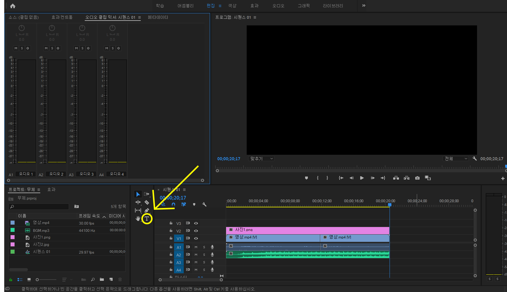
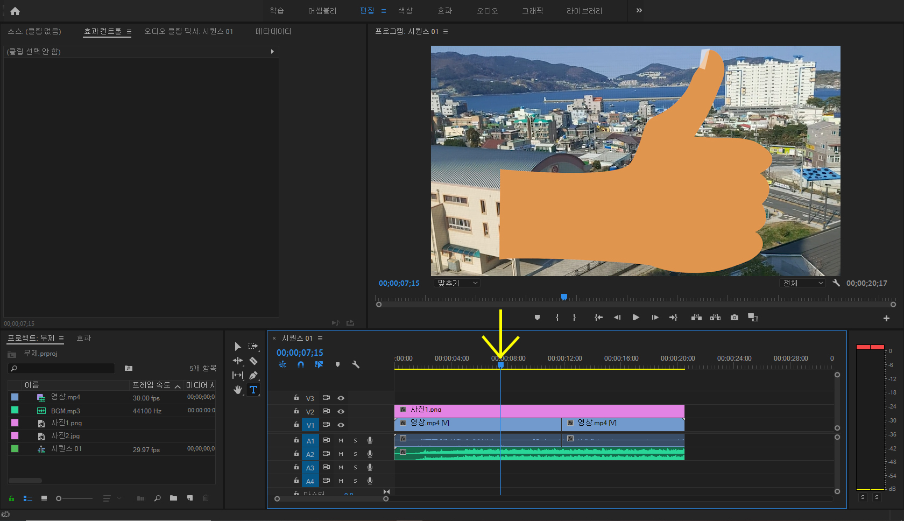
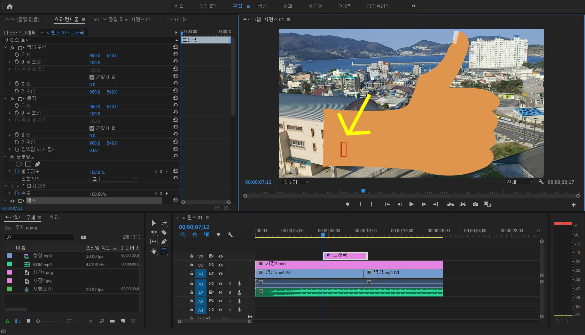
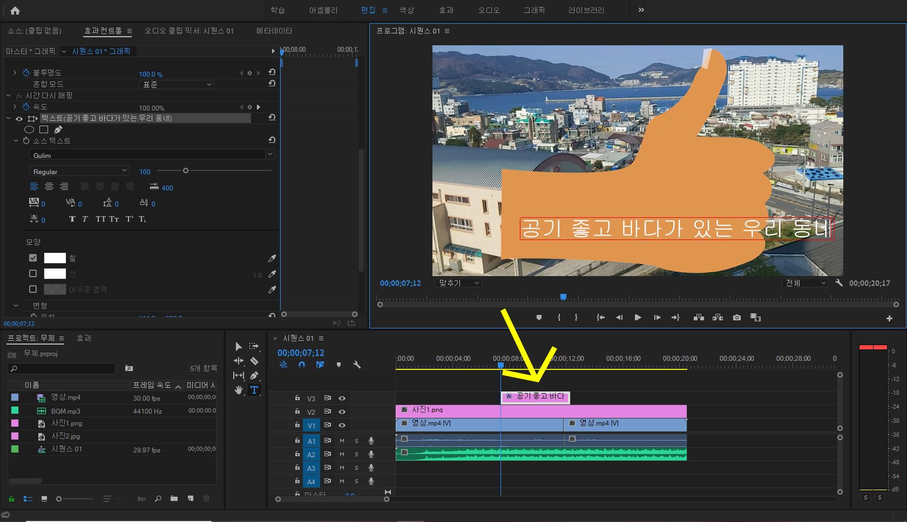

자막 추가
이번에는 자막을 추가하는 법에 대해 알아보겠습니다.
먼저 저 T 모양의 아이콘을 선택해줍니다.
그 다음 자막을 넣고 싶은 위치로 이동합니다.
그 상태로 화면을 클릭하면 텍스트 박스가 생겨납니다.
이제 그곳에 글자를 쓰면 자막 넣기 완성입니다!
이것이 자막 블럭입니다.
만약 자막이 끝까지 있게 하고 싶다면
사진 추가할 때 길이를 늘렸던 것과 똑같이 늘려주시면 됩니다.
자 이렇게 해서 자막 추가가 끝이 났습니다.
사진과 마찬가지로 아직은 크기도, 위치도 바꿀 수 없지만
그 점들은 다음 단계인 효과에서 알아보도록 합시다.